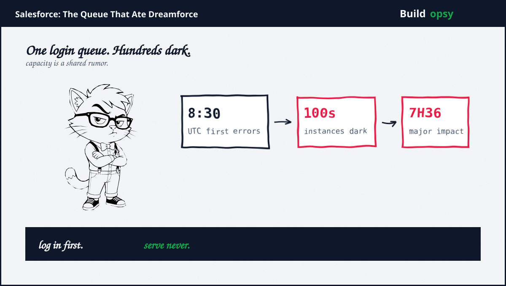
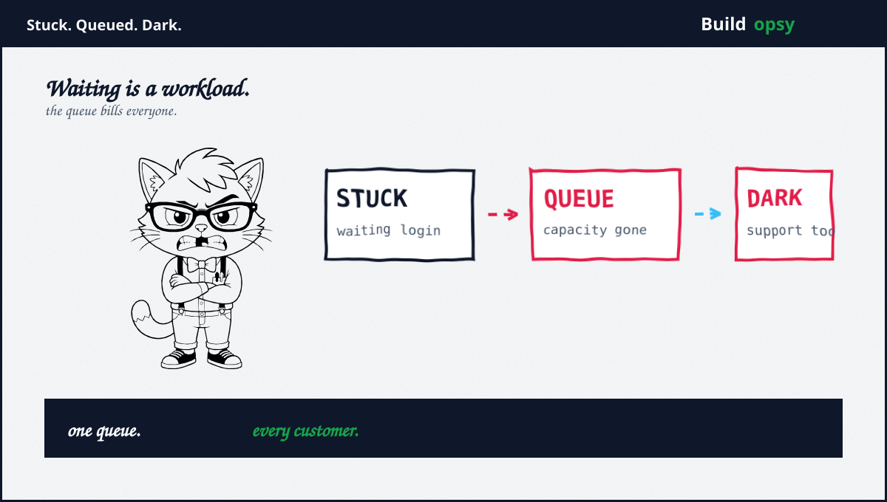

1. Wednesday on the Biggest Stage
Dreamforce day two opened with the worst possible keynote: silence where software should be. First customer reports landed around 8:30 UTC on September 16. The status page confirmed requests sticking while waiting on an internal login service. By late morning UTC the company named the deeper cause: increased load on a core system component had reduced its ability to process customer requests. A validated fix began fleet rollout mid-morning UTC. Independent trackers logged major impact across roughly seven and a half hours, with full resolution on the trust site by evening UTC.
The scope is what makes this a postmortem instead of an incident note. Hundreds of customer instances across the United States, Britain, Germany, France, India, plus Japan. Severe delays, intermittent errors, plus unreachable services. American users mostly slept through it. European plus Asian business hours absorbed it whole. Timing spared one continent plus billed two others, which is geography as load balancer, minus the balancing.
2. The Queue Mechanics
Login sits in front of everything, which makes it the cheapest place to cause the most expensive outage. Model it with Little law. Pending requests equal arrival rate times time stuck waiting. Normally the stuck time is milliseconds, so the pending set stays small. When the login service slows under load, stuck time grows, the pending set grows with it, plus each stuck request holds a connection, a thread, plus a timeout budget while contributing nothing. The queue becomes a workload of its own, consuming the capacity it waits for. This is the classic congestion collapse shape: the slower the service, the more load arrives asking about the slowness.
Now multiply by multitenancy. One shared login path serves hundreds of instances, so the collapse transmits instantly across tenant boundaries that exist everywhere except the one component that matters. Noisy tenants did not cause this. Shared fate did. The capacity number that counts is not per-instance headroom but the shared service ceiling. The status updates describe exactly that ceiling draining: increased load on a core component, reduced ability to process requests, fleet-wide symptoms. When the chokepoint is shared, every tenant inherits the worst tenant hour simultaneously.
Price the shape with the downtime calculator. Hours of degraded CRM across six countries, times revenue teams priced per minute, plus SLA exposure on top. Conference-day timing adds unmodeled cost no calculator captures: every prospect demo becomes a reliability demo.

3. The Blast Radius, Including Support
The cruelest detail sits one line deep in the status updates: the outage degraded support case creation itself. Customers could not open tickets about being unable to open anything. Fate-sharing between product plus support tooling turns every incident into a communications blackout at the worst hour. Status pages carried the load instead, which is why status-page clarity deserves postmortem-grade attention. Salesforce updates were frequent plus specific, credit where due. The channel that failed was the private one.
A secondary vendor footnote deserves separation from the main cause. Same-day reporting noted browser freezing tied to Chrome plus Edge versions, with vendor fixes rolling separately. Distinct mechanism, distinct fix, overlapping morning. Incident reports often braid two failures into one story. The login queue explains the fleet-wide delays. The browser note explains some frozen tabs. Conflating them would misassign both fixes, so this file keeps them on separate shelves.
4. What Went Wrong in the Design
Authentication had no bulkhead. Every request path funneled through one login service with no isolation between tenants or traffic classes. Bulkheads exist precisely so one slow dependency cannot tax all callers. Login is the last place to skip them plus the first place they were skipped.
Queue depth had no circuit breaker. Requests waited instead of failing fast, so the pending set grew without bound while timeouts stretched. Fail-fast with clear errors would have bounded the blast radius to slowness instead of darkness. Waiting politely is how queues become outages.
Support rode the same fate. Case creation depended on the same distressed core, removing the escape hatch during the fire. Support tooling should fail over to island mode: static forms, queued intake, plus independent storage. Anything less converts incidents into silence.
Load shedding arrived as a fix, not a feature. The mitigation restored capacity, which proves capacity controls existed to be operated. Static priority tiers plus automatic shedding under queue pressure would have degraded gracefully instead of collapsing globally. The knob existed. Nobody turned it until morning.
5. What Should Happen Instead
First, bulkhead the login path per tenant cohort plus traffic class. Interactive logins, API tokens, plus internal calls should draw from separate pools with separate ceilings. One cohort pain must never spend another cohort budget.
Second, fail fast with budgets. Cap queue wait per request class, then shed with explicit errors plus retry guidance. A fast no beats a slow maybe at fleet scale. Timeouts are load-bearing walls, not tuning knobs.
Third, island-mode the support plane. Case intake must survive core distress on independent storage with async replay. Test it by failing the core in staging quarterly. The drill that never runs is the drill that fails on conference day.
Fourth, autoscale the chokepoint on queue depth, not CPU. Login services saturate on waits long before they saturate on compute. Queue length is the scaling signal. CPU graphs will report calm seas while the harbor fills.
Fifth, rehearse conference-day load explicitly. Marketing calendars are capacity forecasts. Flagship events deserve pre-scaled headroom plus frozen deploys, priced against the alternative the whole world just watched.
6. The Verdict
Credit the response first. Detection within the hour, named cause by late morning, validated fix rolling before noon UTC, frequent status updates throughout. That is a functioning incident machine. The machine worked. The architecture it protects did not, because no incident process fixes a missing bulkhead at 9 AM. It only discovers it, loudly, on stage.
The lesson travels to every multitenant system with a shared front door. Find yours tonight. Measure its queue depth under normal load. Then imagine that depth times ten with support sharing the same fate. If the picture scares you, the postmortem is already scheduled. It just needs a conference.
One queue. Hundreds dark. Zero working support tickets.
Sources and Method
This postmortem follows the Salesforce status page plus same-day reporting on September 16 2026. Timings plus scope come from the published accounts. Queue figures are modeled from the disclosed mechanism.
- Hindustan Times: Worldwide delays plus errors timeline (Sep 16 2026)
- Mashable: Dreamforce-day outage plus vendor browser note (Sep 16 2026)
- Quartz: Global outage during Dreamforce (Sep 16 2026)
- The Register: Outage amid Dreamforce (Sep 16 2026)
- ThousandEyes: Outage analysis (Sep 16 2026)
- StatusStack: Core disruption timeline (Sep 16 2026)